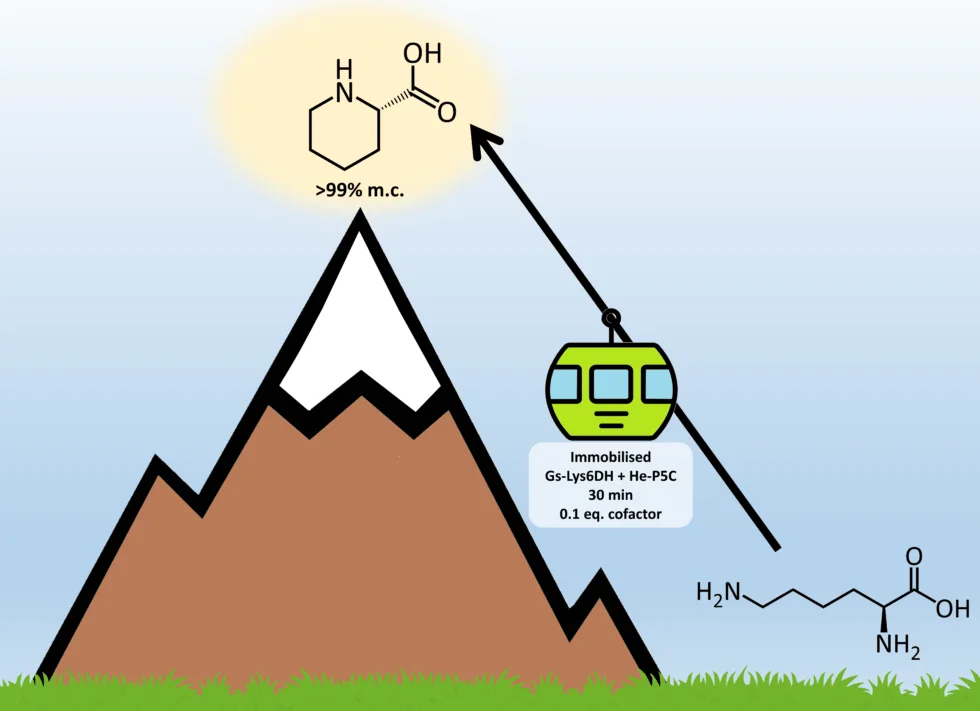

Better Living Through Chemistry: Prof. Francesca Paradisi, Chemist

Prof. Francesca Paradisi still remembers the peculiar but not unpleasant smell of her mother’s chemistry lab at the University of Bologna in Italy. As a professor at the University of Bern, she now brings her children to her own chemistry lab. Creative, intuitive, sustainable science is a family tradition.
Thanks to her mother, Prof. Paradisi was always interested in chemistry. She says she “should have been a medical doctor,” but lacked the dispassionate temperament it required. She knew she wanted to do research, and an excellent high school professor confirmed her preference for chemistry. After earning her PhD in Italy, she joined a biochemistry research group in Ireland as a postdoctoral fellow.
Prof. Paradisi in her chemistry lab at the University of Bern.
Prof. Paradisi’s postdoc supervisor provided a safety net for her to explore her own ideas, and modeled her cherished values of directness, objectivity, and perseverance. He also helped her define her niche between biology and chemistry. Learning techniques from scratch was not easy, and true interdisciplinarity demands “sufficient understanding to ask the right questions.” While it takes time to learn each other’s vocabulary—what biologists call enzymes, chemists call biocatalysts—bridging the gap between disciplines leads to uncommon skills and unprecedented discoveries.
Today, Prof. Paradisi works at her “dream job” in an “ideal scientific environment.” She leads a group of “different backgrounds: biochemists, chemists, chemical engineers, pharmacists, and bioinformaticians.” The Paradisi Research team produces enzymes: proteins that accelerate chemical reactions. They immobilize the enzymes on resins, ready for chemists to “spoon into” reactions, such as those used to produce pharmaceuticals. Their research has wide-ranging applications, from wine production to anti-cancer medication.

A graphical abstract of a recent Paradisi Research publication likens enzymes accelerating a chemical reaction to a gondola accelerating the journey to a mountaintop. (Roura Padrosa, Benítez-Mateos, Calvey, and Paradisi, 2020: https://doi.org/10.1039/D0GC01817A)
Prof. Paradisi’s idea at the end of the rainbow is to produce extremely portable, versatile pharmaceutical laboratories, with enzymes packed into a column reactor that can “fit in the palm of your hand.” This modest size has tremendous implications: for example, these hand-held labs would permit the life-saving production of anesthetics and antibiotics on-demand and on-site in war zones. Pursuing this goal requires innovation. Early on, her team used an aquarium pump to help reagents flow from a beaker into a column reactor. Now, they are aiming at 3D-printing specific enzyme-packed shapes for faster reactions.
In addition to its potentially life-saving applications, Prof. Paradisi finds the interpersonal aspects of her work rewarding. She wants her team to be good people first, good scientists second: “You can always make a scientist out of a good person, but you can not make a good person out of a good scientist” if the scientist is not a good person already. She also enjoys the moments of revelation when she can help students grasp new concepts: “this penny drop that you see is amazing.” She sees teaching as a collaborative quest: the “best reward” is helping students grow into scientists who are “confident…in their own individual strengths.”
Helping build students’ confidence reflects Dr. Paradisi’s own journey. For a long time, she thought she had not encountered any obstacles as a woman in STEM. An evidence-based lecture on inequality in chemistry made her question some of her experiences in retrospect. For example, why did male colleagues always ask her to take the minutes in meetings? She realized that sexism causes self-doubt to accumulate, and can make a scientist miss potential opportunities, e.g., by hesitating to apply for a research grant. Now that she is more aware of these types of issues, she feels better equipped to address any potential impact on her own work.
The overlap between biology and chemistry evolves constantly. Prof. Paradisi envisions that her field will continue to incorporate ever more machine learning, which will result in increased self-optimization and sustainability of flow reaction systems like hers. These small column reactors are the “building blocks” of a better future.
*Thank you to Prof. Francesca Paradisi for sharing her story with 500WS Bern-Fribourg. Click here to find out more about her experience.
Gabrielle Vance
M.Sc. Geology
From the 500 Women Scientists Bern-Fribourg archive. Originally published 4 December 2020.
Explore more stories